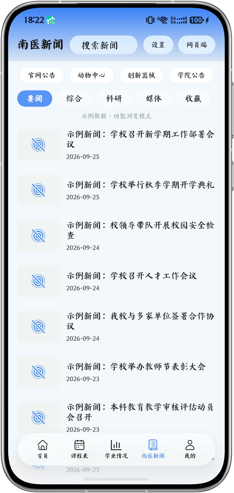
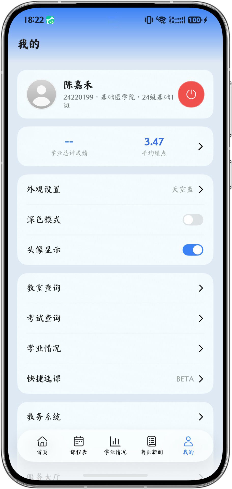
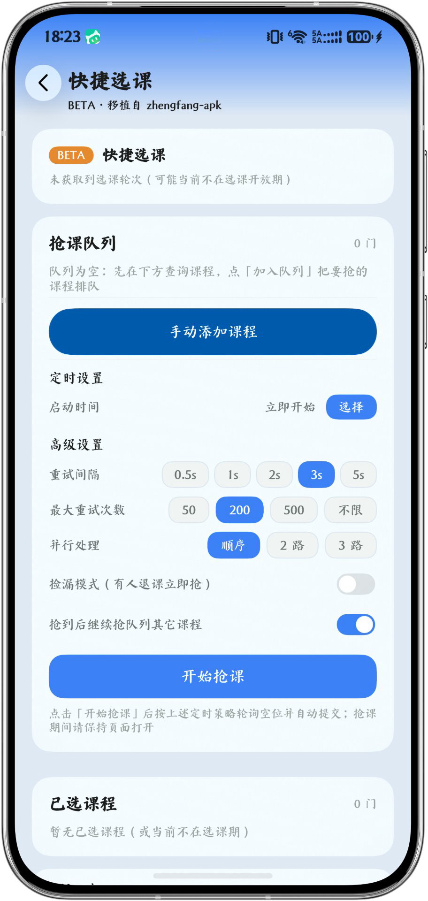
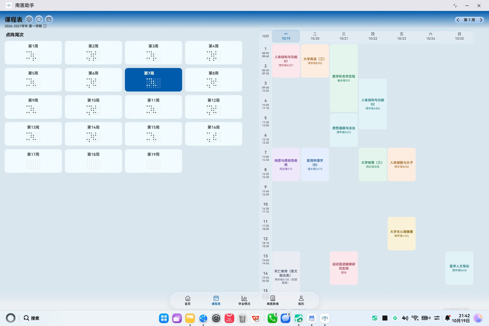
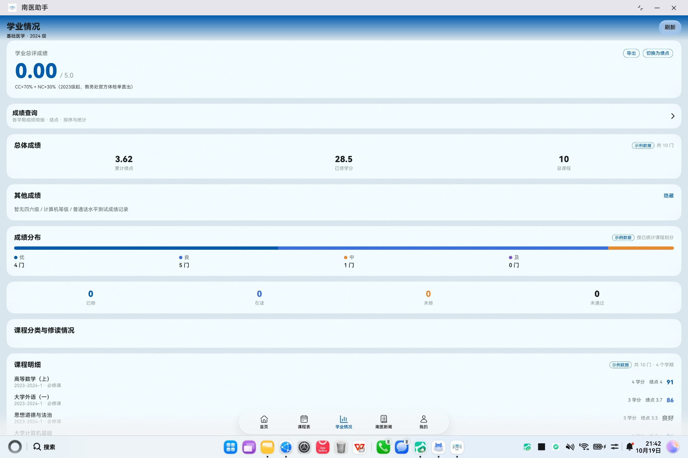
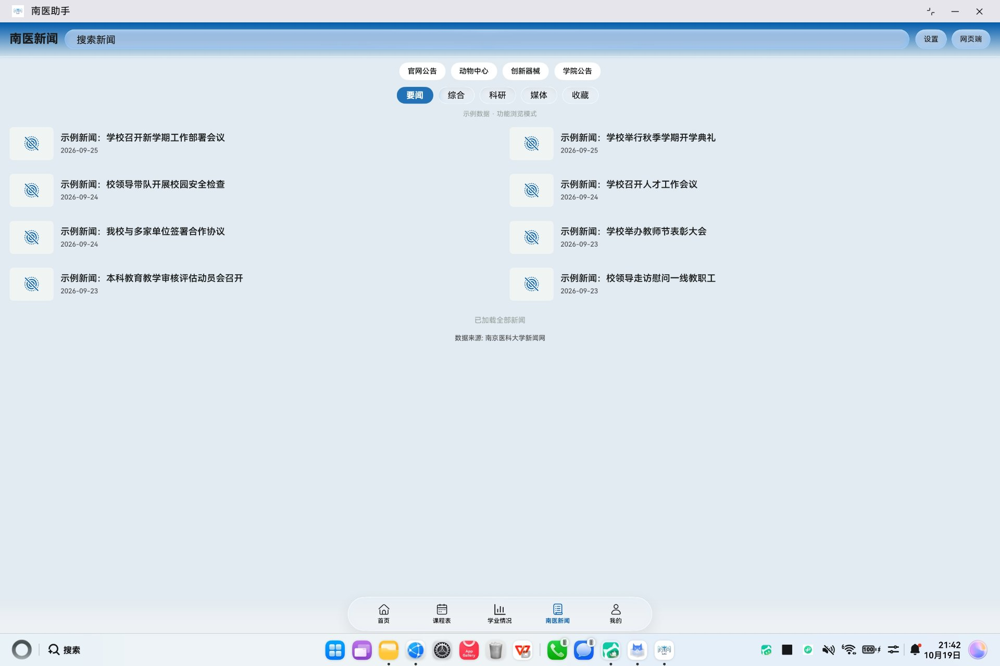

课程表
周视图完整呈现 15 节南医大作息，每门课一种颜色，时间与教室一目了然。周次一键切换、学期信息清晰标注，支持把整学期课程一键写进系统日历，课前自动提醒。
不堆功能，只把南医学生真正高频的几件事做到位：看一眼就知道今天上什么、考什么、差多少学分。
周视图完整呈现 15 节南医大作息，每门课一种颜色，时间与教室一目了然。周次一键切换、学期信息清晰标注，支持把整学期课程一键写进系统日历，课前自动提醒。
平均学分绩点（GPA / 5.0）、累计绩点、已修学分、总课程数一屏读完；等级考试成绩与成绩分布同步呈现，支持学业与五分制绩点切换。
勾选需要的课程，一键生成排版完整的成绩单长图，直接存进相册，发给家人或存档都体面。
考试时间、地点、座位一目了然，自动计算倒计时并写入日历，再也不怕记错考场。
按教学楼与节次筛选空教室，自习、开会、小组讨论，随时找到一間能坐下的教室。
官网公告、动物中心、创新器械、学院公告四大来源聚合，要闻、综合、科研、媒体分类浏览，支持搜索与一键跳转网页端。
选课季的抢课利器：定时启动、重试间隔 0.5s–5s 可调、最大重试次数与并行路数自选，还有人退课立即抢的检漏模式。
今日课程、考试倒计时等桌面卡片抬手即见；外观设置内置多套主题色（天空蓝等）、深色模式与头像显示开关。
首页快捷入口一键进入：时间轴卡片三态呈现当天课程，已结束置灰、进行中绿框倒计时「剩 25 分钟」、待开始显示「1 小时 20 分后」。30 秒自动重算状态，下拉即刷新，省电不走秒。
我的课程、课堂实录、课堂通知三大板块，复用统一身份认证免密直进。内嵌网页容器带顶部进度条与失败重载，离开页面即停后台任务，省电不白屏。
下面 6 张手机截图全部是应用内实拍（示例数据模式），核心页面一个不落；再往下还有 4 张平板端实拍，看看大屏怎么排。

问候、下一节课倒计时、今日课表等六大快捷入口与官方校历月历，一屏之内全部交代清楚。

15 节完整作息，彩色课程块区分课程，左右滑动切换周次，点开即看教室与教师。

绩点大字直读、总体成绩概览、等级考试与成绩分布，数据来源教务系统学业员。

官网公告、动物中心、创新器械与学院公告聚合，分类标签加搜索，还能跳网页端。

绩点速览、外观主题、深色模式、头像显示，教室 / 考试 / 学业 / 快捷选课入口集中。

抢课队列 + 定时策略轮询空位并自动提交，重试间隔、次数、并行路数与检漏模式全可调。
同一套 ArkUI 代码在平板与 2in1 上自动铺开：课程表纵览整周、学业数据左右分栏、新闻多列并排。下面 4 张为平板端实拍（示例数据）。

左侧今日课程与快捷入口，右侧近期考试、消息与官网公告，一屏读完当天所有要紧事。

左侧点阵周次导航，右侧整周 15 节课程一次性铺开，彩色课程块与教室信息清晰可读。

绩点大字、总体成绩、成绩分布与课程明细纵向排布，大屏下信息密度更高也更易读。

要闻、综合、科研、媒体分类切换，公告以双列卡片铺开，单屏可见条目翻倍。
登录、缓存、备份、动画，这些不出现在功能列表里的细节，决定了它到底是「能用」还是「好用」。
网页登录记住会话与设备指纹，重开应用直接进首页。统一身份认证多因子验证只需第一次扫码，之后不再打扰。
课表、成绩、学业数据全部落盘缓存。地铁里、教室里没信号，也能翻出上一节上到哪、下一场考试在哪。
换机前一键导出 .xnd 备份，其他软件打不开；导入需密码，课表与设置完整还原。
外观设置内置天空蓝等多套主题，深色模式一键切换，头像显示随心开关，界面细节由你定。
不是。南医助手由南京医科大学学生独立开发，与学校无隶属或合作关系，也未以任何形式宣称自己是官方应用。所有数据以学校教务系统为准。
账号密码只在你本机用于向学校系统发起登录请求，不会上传到任何自有服务器。项目本身没有服务器，也没有数据接收端。你可以在「我的 → 清空数据」中随时删除本地全部记录。
学校统一身份认证对陌生设备会触发多因子验证。首次在应用内网页登录时完成一次扫码或勾选「信任此设备」，之后应用会保存设备指纹与会话，实现无感重登。
支持平板与 2in1 设备，课程表、成绩页均有大屏布局。系统需 HarmonyOS NEXT 且 API 版本不低于 26；更早的鸿蒙版本无法安装。
快捷选课只把你在选课页面的手动操作自动化：按你设定的时间与间隔轮询课程空位并提交，不绕过任何校方限制。选课规则与选课资格以教务处规定为准，请合理使用。
可以。项目以 MIT 协议开源，数据层与视图层解耦，主要改动集中在 config/、Constants.ets 与登录链路。欢迎 Fork 后适配你所在的高校，也欢迎把通用改动提回上游。
先在「我的 → 数据同步」下拉刷新；若仍不一致，多半是教务系统字段调整导致解析偏差。可在仓库提 Issue，附上截图（隐去个人信息）与发生时间。